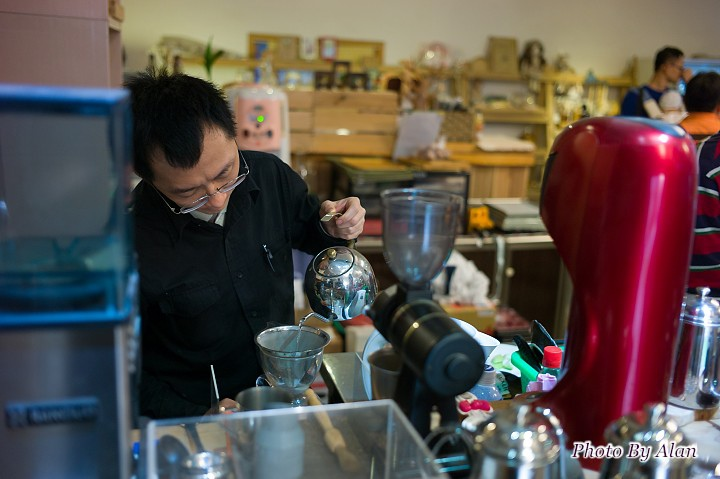
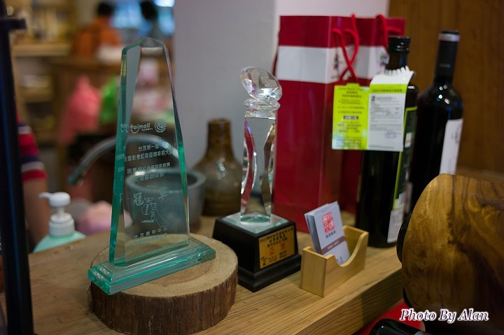

綠禾塘。翔頂咖啡


在滿滿新蓋大樓的新竹高鐵站附近, 有個保留舊式客家風格的新瓦屋, 翔鼎咖啡就坐落在這個滿滿傳統建築的地方, 與咖啡廳合開的綠禾塘則是提供了好吃的蔬食簡餐。 老闆阿智曾經是在竹科上班的工程師, 後來對咖啡有濃厚興趣, 轉而投入咖啡這塊大坑。老闆曾經為了要台灣賽風比賽, 砸重本征戰了兩次, 可惜最後都拿亞軍。有次喝了老闆的特調, 蜂蜜氣泡水+單品咖啡, 那個花香氣息至今還是讓我難忘XD 地點位於新竹高鐵站附近, 可以選擇周六的時候前來, 這裡在周六會有小農市集, 可以買到新竹縣各方的有機蔬菜。